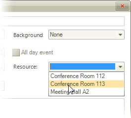

Working with Resources
Overview
For the end-user, RadScheduler resources can be company resources, such as conference rooms, vehicles, laptops, or AV equipment, which can be booked and assigned to a particular event.
Binding the Resources Collection
See the Using DataSource property and Binding to Business Objects topics on how to bind the Resources Collection.
If the data bound object is a list of appointments, set the Resources property of the AppointmentMappingInfo object to "Resources".
Do not set the Resources property of the AppointmentMappingInfo object to "Resources" if the data bound object has a property that has no Resources collection, but has only a ResourceId property.
Adding Resources Manually
To add resources to RadScheduler's Resource drop down (visible in the appointment dialog by default), you need to use the Resources collection's Add() method and to pass a new Resource instance. Pass a unique ID and a description in the constructor:
A Resource object also has an Image property that is not displayed as of this writing. In the near future, resource images will be displayed by the scheduler in the resource selection control.
[C#]
private void LoadResources()
{
string[] descriptions = { "Conference Room 112", "Conference Room 113", "Meeting Hall A2" };
int count = 1;
foreach (string description in descriptions)
{
this.radScheduler1.Resources.Add(new Resource(count++, description));
}
}
[VB.NET]
Private Sub LoadResources()
Dim descriptions() As String = {"Conference Room 112", "Conference Room 113", "Meeting Hall A2"}
Dim count As Integer = 1
For Each description As String In descriptions
Me.RadScheduler1.Resources.Add(New Telerik.WinControls.UI.Resource(count, description))
count += 1
Next description
End Sub
